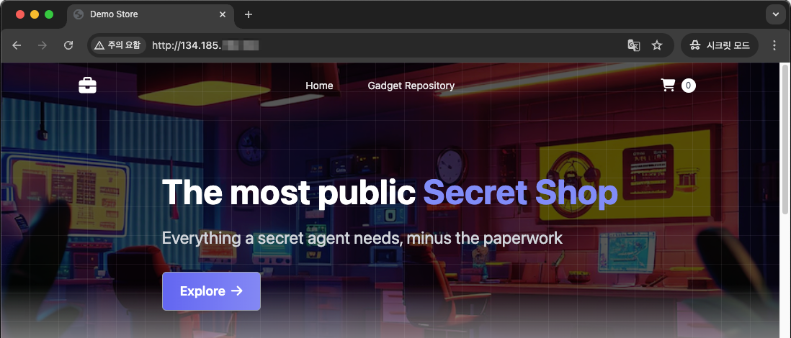

9.2 Amazon EKS에서 OKE로 마이그레이션하기 (OCI Object Storage 사용)
이번에는 Amazon EKS에서 OKE로 마이그레이션하는 과정입니다. EKS 상에서 사용하고 있는 애플리케이션이 있다는 가정하에 마이그레이션과정을 테스트 해보기 위해 retail-store-sample-app 예제를 먼저 EKS에 배포 설정하고, Velero를 통해 OKE로 마이그레이션 해보겠습니다.
EKS 소스 클러스터 생성
-
Amazon EKS(Minimal)로 Terraform으로 EKS 클러스터를 생성합니다.
https://github.com/aws-containers/retail-store-sample-app/tree/main/terraform/eks/minimal
-
클러스터 생성후 Terraform Output을 따라 다음 명령으로 kubeconfig를 생성합니다.
aws eks --region ap-northeast-2 update-kubeconfig --name retail-store -
샘플 애플리케이션을 배포합니다.
kubectl apply -f https://github.com/aws-containers/retail-store-sample-app/releases/latest/download/kubernetes.yaml kubectl wait --for=condition=available=true deployment --all
AWS ALB Ingress 설정
ALB Ingress 설정 이관 테스트를 위해 설치된 Service ui를 ClusterIP 타입으로 변경하고, Ingress를 추가합니다.
참고 - https://www.eksworkshop.com/docs/fundamentals/exposing/ingress/
-
생성된 Service ui의 타입을 변경합니다.
kubectl patch service ui --type merge -p='{"spec":{"type": "ClusterIP"}}' -
Terraform 설치시 ALB Controller도 함께 설치되어 있는 지 먼저 확인합니다.
$ helm list -A NAME NAMESPACE REVISION UPDATED STATUS CHART APP VERSION aws-load-balancer-controller kube-system 1 2025-04-14 14:43:32.118124 +0900 KST deployed aws-load-balancer-controller-1.7.1 v2.7.1 cert-manager cert-manager 1 2025-04-14 14:45:39.280396 +0900 KST deployed cert-manager-v1.14.3 v1.14.3 -
다음 내용으로 Ingress 설정 파일을 생성합니다.
# ingress.yaml apiVersion: networking.k8s.io/v1 kind: Ingress metadata: name: ui annotations: alb.ingress.kubernetes.io/scheme: internet-facing alb.ingress.kubernetes.io/target-type: ip alb.ingress.kubernetes.io/healthcheck-path: /actuator/health/liveness spec: ingressClassName: alb rules: - http: paths: - path: / pathType: Prefix backend: service: name: ui port: number: 80 -
적용합니다.
kubectl apply -f ingress.yaml -
생성 결과를 확인합니다.
$ kubectl get ingress ui NAME CLASS HOSTS ADDRESS PORTS AGE ui alb * k8s-default-ui-db290fc81c-794615854.ap-northeast-2.elb.amazonaws.com 80 18s -
웹 브라우저로 해당 주소가 접속되는 지 확인해 봅니다.
Storage - EBS CSI Driver 설치
영구볼륨으로 EBS를 사용하는 경우, 먼저 EBS CSI Driver를 설치해야 합니다.
참고 - https://www.eksworkshop.com/docs/fundamentals/storage/ebs/
-
설치된 mysql을 조회해보면 현재 EmptyDir 볼륨을 사용하고 있습니다.
$ kubectl describe statefulset catalog-mysql Name: catalog-mysql Namespace: default ... Volumes: data: Type: EmptyDir (a temporary directory that shares a pod's lifetime) -
EBS CSI Driver를 설치를 위한 IAM Role을 생성합니다
export EKS_CLUSTER_NAME=retail-store eksctl create iamserviceaccount --name ebs-csi-controller-sa --namespace kube-system --cluster ${EKS_CLUSTER_NAME} --attach-policy-arn arn:aws:iam::aws:policy/service-role/AmazonEBSCSIDriverPolicy --approve --role-only --role-name AmazonEKS_EBS_CSI_DriverRole -
Amazon EBS CSI Driver를 설치합니다.
export ACCOUNT_ID=<YOUR_AWS_ACCOUNT_ID> export EBS_CSI_ADDON_ROLE=arn:aws:iam::${ACCOUNT_ID}:role/AmazonEKS_EBS_CSI_DriverRole aws eks create-addon --cluster-name $EKS_CLUSTER_NAME --addon-name aws-ebs-csi-driver \ --service-account-role-arn $EBS_CSI_ADDON_ROLE \ --configuration-values '{"defaultStorageClass":{"enabled":true}}' aws eks wait addon-active --cluster-name $EKS_CLUSTER_NAME --addon-name aws-ebs-csi-driver -
설치가 잘 되었는지 확인합니다.
$ kubectl get daemonset ebs-csi-node -n kube-system NAME DESIRED CURRENT READY UP-TO-DATE AVAILABLE NODE SELECTOR AGE ebs-csi-node 3 3 3 3 3 kubernetes.io/os=linux 13m -
StorageClass를 확인합니다. ebs-csi-default-sc가 새로 설치된 것입니다.
$ kubectl get storageclass NAME PROVISIONER RECLAIMPOLICY VOLUMEBINDINGMODE ALLOWVOLUMEEXPANSION AGE ebs-csi-default-sc (default) ebs.csi.aws.com Delete WaitForFirstConsumer true 4m35s gp2 kubernetes.io/aws-ebs Delete WaitForFirstConsumer false 130m
EBS 볼륨을 사용하는 MySQL 배포하기
-
배포할 YAML 파일입니다. storageClass로 ebs-csi-default-sc을 사용하여 영구볼륨을 요청하게 됩니다.
# statefulset-mysql.yaml apiVersion: apps/v1 kind: StatefulSet metadata: name: catalog-mysql-ebs labels: app.kubernetes.io/created-by: eks-workshop app.kubernetes.io/team: database app.kubernetes.io/name: catalog app.kubernetes.io/instance: catalog app.kubernetes.io/component: mysql-ebs app.kubernetes.io/owner: retail-store-sample spec: replicas: 1 selector: matchLabels: app.kubernetes.io/name: catalog app.kubernetes.io/instance: catalog app.kubernetes.io/component: mysql-ebs app.kubernetes.io/owner: retail-store-sample serviceName: mysql template: metadata: labels: app.kubernetes.io/name: catalog app.kubernetes.io/instance: catalog app.kubernetes.io/component: mysql-ebs app.kubernetes.io/owner: retail-store-sample app.kubernetes.io/created-by: eks-workshop app.kubernetes.io/team: database spec: containers: - name: mysql image: "public.ecr.aws/docker/library/mysql:8.0" imagePullPolicy: IfNotPresent env: - name: MYSQL_ROOT_PASSWORD value: my-secret-pw - name: MYSQL_USER valueFrom: secretKeyRef: name: catalog-db key: RETAIL_CATALOG_PERSISTENCE_USER - name: MYSQL_PASSWORD valueFrom: secretKeyRef: name: catalog-db key: RETAIL_CATALOG_PERSISTENCE_PASSWORD - name: MYSQL_DATABASE value: catalog ports: - name: mysql containerPort: 3306 protocol: TCP volumeMounts: - name: data mountPath: /var/lib/mysql volumeClaimTemplates: - metadata: name: data spec: accessModes: ["ReadWriteOnce"] storageClassName: ebs-csi-default-sc resources: requests: storage: 30Gi -
적용하여 MySQL 컨테이너를 생성합니다.
kubectl apply -f statefulset-mysql.yaml -
현재 catalog-mysql 서비스는 기존의 mysql Pod를 바라보고 있습니다.
$ kubectl get svc catalog-mysql NAME TYPE CLUSTER-IP EXTERNAL-IP PORT(S) AGE catalog-mysql ClusterIP 172.20.142.248 <none> 3306/TCP 142m -
다음 명령을 실행하여 catalog-mysql-ebs 컨테이너를 바라보도록 변경합니다.
- name에
/가 포함되어 있는 경우 path와 혼동되기 때문에~1로 변경합니다.
kubectl patch service catalog-mysql --type='json' -p='[{"op": "add", "path": "/metadata/labels/app.kubernetes.io~1component", "value":"mysql-ebs"}]' kubectl patch service catalog-mysql --type='json' -p='[{"op": "add", "path": "/spec/selector/app.kubernetes.io~1component", "value":"mysql-ebs"}]' - name에
-
영구볼륨을 사용하지 않는 기존 MySQL을 종료하고, catalog 컨테이너를 재시작합니다.
kubectl scale statefulsets catalog-mysql --replicas=0 kubectl rollout restart deployment catalog -
catalog 컨테이너가 정상 기동하는 지 확인합니다.
$ kubectl get pod -lapp.kubernetes.io/name=catalog NAME READY STATUS RESTARTS AGE catalog-6c8d7c4ff8-rnx52 1/1 Running 0 2m45s catalog-mysql-ebs-0 1/1 Running 0 11m -
이후 마이그레이션시 영구볼륨도 함께 마이그레이션 되는 지 확인하기 위해 흔적을 남깁니다.
$ kubectl exec catalog-mysql-ebs-0 -- bash -c "echo 'EKS to OKE Migration with PVC attached ' > /var/lib/mysql/my-log.txt" $ kubectl exec catalog-mysql-ebs-0 -- bash -c "cat /var/lib/mysql/my-log.txt" EKS to OKE Migration with PVC attached
Velero 설치준비
설치를 위해 작업환경에 velero CLI를 설치하고, 백업 파일을 저장한 S3 또는 S3 호환 오브젝트 스토리지가 필요합니다. 제일아래 참고에서 설명하듯이, OCI Object Storage와 S3를 혼용해서 사용할 때 이슈가 발생하여, 일단은 OCI Object Storage 하나를 사용하여 테스트를 마무리하였습니다.
OCI Object Storage Bucket 만들기
10.1 Velero로 백업, 복구하기을 참고하여, OCI Object Storage Bucket을 생성합니다.
- Bucket Name: 예, oci-bucket-velero-20250414
Velero 다운로드
가이드에 따라 CLI를 설치합니다. 이전 장에서 이미 설치한 경우 그대로 사용합니다.
-
설치 확인
$ velero version Client: Version: v1.15.2 Git commit: - ...
EKS 소스 클러스터에 Velero 설치하기
백업할 대상 클러스터에 Velero 서버 모듈을 설치해야 합니다.
-
현재 kubectl로 EKS 소스 클러스터에 연결된 상태임을 확인합니다.
$ kubectl config get-contexts -
다음 명령 형식으로 설치합니다. 여기서는 velero-plugin-for-aws는 1.8.2 버전을 설치합니다. (1.9.1, 1.11.1는 테스트시 OCI Object Storage에 대해서 오류 발생)
- OBJECT_STORAGE_NAMESPACE: OCI Object Storage를 사용하기 위한 네임스페이스값입니다.
NAMESPACE=<OBJECT_STORAGE_NAMESPACE> velero install \ --provider aws \ --bucket oci-bucket-velero-20250414 \ --use-volume-snapshots=false \ --secret-file ./velero-credentials-for-oci \ --plugins velero/velero-plugin-for-aws:v1.8.2 \ --backup-location-config region=ap-chuncheon-1,s3ForcePathStyle="true",s3Url=https://${NAMESPACE}.compat.objectstorage.ap-chuncheon-1.oraclecloud.com \ --use-node-agent -
설치 결과를 확인합니다.
$ kubectl get deployment -n velero NAME READY UP-TO-DATE AVAILABLE AGE velero 1/1 1 1 17s -
OCI Object Storage Bucket 연결이 잘 되었다면, 아래 명령결과 PHASE=Available이 됩니다.
$ velero backup-location get NAME PROVIDER BUCKET/PREFIX PHASE LAST VALIDATED ACCESS MODE DEFAULT default aws oci-bucket-velero-20250414 Available 2025-04-15 17:03:43 +0900 KST ReadWrite true
EKS 소스 클러스터 백업하기
-
백업할 자원 확인하기 - 현재 배포한 retail-store-sample-app은 모두 default 네임스페이스에 있습니다.
$ kubectl get ns NAME STATUS AGE cert-manager Active 4h26m default Active 4h32m kube-node-lease Active 4h32m kube-public Active 4h32m kube-system Active 4h32m opentelemetry-operator-system Active 4h27m velero Active 4m40s $ kubectl get all -n default NAME READY STATUS RESTARTS AGE pod/carts-76d7f44b64-w9th4 1/1 Running 2 (4h15m ago) 4h15m pod/carts-dynamodb-5948dcbf5d-qvxhz 1/1 Running 0 4h15m ... -
Velero로 default 네임스페이스를 볼륨포함해서 백업하고 결과를 확인합니다.
velero backup create eks-source-cluster --include-namespaces default --default-volumes-to-fs-backup velero backup describe eks-source-cluster --details-
실행 예시
- v1/PersistentVolumeClaim, v1/PersistentVolume가 백업되고, Pod Volume Backups도 함께 백업되었습니다.
- targetgroupbindings.elbv2.k8s.aws: EKS에서만 사용하는 자원이 백업되었습니다. OKE에 마이그레이션 할때는 불필요해보입니다. 이후 복구할때 어떤 자원의 유형만 복구할 지 취사선택이 필요해 보입니다.
$ velero backup create eks-source-cluster --include-namespaces default --default-volumes-to-fs-backup Backup request "eks-source-cluster" submitted successfully. Run `velero backup describe eks-source-cluster` or `velero backup logs eks-source-cluster` for more details. $ velero backup describe eks-source-cluster --details Name: eks-source-cluster ... Phase: Completed ... Total items to be backed up: 91 Items backed up: 91 Resource List: apiextensions.k8s.io/v1/CustomResourceDefinition: - targetgroupbindings.elbv2.k8s.aws apps/v1/ControllerRevision: - default/catalog-mysql-5745774864 - default/catalog-mysql-ebs-58b9484bd4 - default/orders-postgresql-54f7d4d9cb - default/orders-rabbitmq-86f687bb4f apps/v1/Deployment: - default/carts - default/carts-dynamodb - default/catalog - default/checkout - default/checkout-redis - default/orders - default/ui apps/v1/ReplicaSet: ... v1/PersistentVolume: - pvc-08156e8d-decc-4a5b-94b8-376a8ec3bb5c v1/PersistentVolumeClaim: - default/data-catalog-mysql-ebs-0 ... Backup Volumes: Velero-Native Snapshots: <none included> CSI Snapshots: <none included> Pod Volume Backups - kopia: Completed: default/carts-76d7f44b64-w9th4: tmp-volume default/catalog-6c8d7c4ff8-rnx52: tmp-volume default/catalog-mysql-ebs-0: data default/checkout-6c7f46cb47-lwx5m: tmp-volume default/orders-85c8f745ff-glbvz: tmp-volume default/orders-postgresql-0: data default/orders-rabbitmq-0: data default/ui-57f6687d55-6zcj8: tmp-volume HooksAttempted: 0 HooksFailed: 0
-
-
백업이 완료되었습니다.
$ velero get backup NAME STATUS ERRORS WARNINGS CREATED EXPIRES STORAGE LOCATION SELECTOR eks-source-cluster Completed 0 0 2025-04-14 19:27:35 +0900 KST 29d default <none>
OKE 타켓 클러스터 준비
OCI Native Ingress Controller 설치하기
EKS 소스 클러스터에 사용하던 ALB Ingress Controller를 OKE에서 OCI Native Ingress Controller로 마이그레이션한다고 하면, 먼저 타켓 클러스터에 OCI Native Ingress Controller 설치가 필요합니다. 가이드에 따라 설치합니다.
참고 - 1.2.2.1.1 OCI Native Ingress Controller 설치하기
Velero 설치하기
10.1 Velero로 백업, 복구하기를 참고하여, OKE 타켓 클러스터에 Velero 설치합니다.
-
현재 kubectl로 OKE 소스 클러스터에 연결된 상태임을 확인합니다.
-
다음 명령 형식으로 설치합니다. 여기서는 velero-plugin-for-aws는 1.8.2 버전을 설치합니다.
NAMESPACE=<OBJECT_STORAGE_NAMESPACE> velero install \ --provider aws \ --bucket oci-bucket-velero-20250414 \ --use-volume-snapshots=false \ --secret-file ./velero-credentials-for-oci \ --plugins velero/velero-plugin-for-aws:v1.8.2 \ --backup-location-config region=ap-chuncheon-1,s3ForcePathStyle="true",s3Url=https://${NAMESPACE}.compat.objectstorage.ap-chuncheon-1.oraclecloud.com \ --use-node-agent -
OCI Object Storage Bucket 연결이 잘 되었다면, 아래 명령결과 PHASE=Available이 됩니다.
$ velero backup-location get NAME PROVIDER BUCKET/PREFIX PHASE LAST VALIDATED ACCESS MODE DEFAULT default aws oci-bucket-velero-20250414 Available 2025-04-14 22:57:18 +0900 KST ReadWrite true -
백업이 조회되는 지 확인해 봅니다.
$ velero get backup NAME STATUS ERRORS WARNINGS CREATED EXPIRES STORAGE LOCATION SELECTOR eks-source-cluster Completed 0 0 2025-04-15 17:11:30 +0900 KST 29d default <none>
마이그레이션 준비
컨테이너 이미지 마이그레이션
기존에 사용하던 컨테이너 이미지 레지스트리도 이관한다고 하면, 새 컨테이너 이미지 레지스트리로 사용중인 이미지들을 옮겨야 합니다. 이후에는 이미지 빌드 프로세스상에서 타켓을 새 이미지 레지스트리로 변경이 필요합니다. 아래는 현재 이미지를 옮기는 간단한 예시입니다.
-
아래 두 레지스트리에 접근이 가능한 위치에서 docker pull, tag, push 순서로 ECR에서 OCIR로 이미지 등록하는 예시입니다. 다른 이미지들도 동일한 방식으로 진행할 수 있습니다.
docker pull public.ecr.aws/aws-containers/retail-store-sample-catalog:1.1.0 NAMESPACE=<OBJECT_STORAGE_NAMESPACE> docker tag public.ecr.aws/aws-containers/retail-store-sample-catalog:1.1.0 yny.ocir.io/${NAMESPACE}/aws-containers/retail-store-sample-catalog:1.1.0 docker push yny.ocir.io/${NAMESPACE}/aws-containers/retail-store-sample-catalog:1.1.0
Velero 복구 준비
Velero로 백업파일을 사용하여 복구시 주소, 설정값 등의 변경이 필요합니다. Velero에서는 Image와 StorageClass 변경을 제공하고, 추가로 일반적인 값 변경을 위해 Resource Modifier을 제공합니다. 이 세가지를 이용해 샘플 앱을 이관시 변경되도록 설정해 봅니다.
-
먼저 백업 복구시 이미지 주소 변경을 위한 설정파일을 준비합니다.
NAMESPACE=<OBJECT_STORAGE_NAMESPACE> cat > change-image-name-config.yaml <<EOF apiVersion: v1 kind: ConfigMap metadata: name: change-image-name-config namespace: velero labels: velero.io/plugin-config: "" velero.io/change-image-name: RestoreItemAction data: case1: "public.ecr.aws/aws-containers/,yny.ocir.io/${NAMESPACE}/aws-containers/" case2: "public.ecr.aws/aws-dynamodb-local/,yny.ocir.io/${NAMESPACE}/aws-containers/" case3: "public.ecr.aws/docker/library/,yny.ocir.io/${NAMESPACE}/docker/library/" EOF -
PV/PVC를 위한 StorageClass 변경을 위한 설정파일을 준비합니다.
cat > change-storage-class-config.yaml <<EOF apiVersion: v1 kind: ConfigMap metadata: name: change-storage-class-config namespace: velero labels: velero.io/plugin-config: "" velero.io/change-storage-class: RestoreItemAction data: # add 1+ key-value pairs here, where the key is the old # storage class name and the value is the new storage # class name. ebs-csi-default-sc: oci-bv EOF -
Image와 StorageClass 외에 Resource Modifier를 사용한 일반적인 변경을 위한 설정파일을 준비합니다. ALB Ingress Controller에서 OCI Native Ingress Controller로 변경으로 필요한 Ingress의 class 변경 및 annotation을 삭제, 신규 추가합니다.
cat > resource-modifier-ingress.yaml <<EOF version: v1 resourceModifierRules: - conditions: groupResource: ingresses.networking.k8s.io resourceNameRegex: ".*" patches: - operation: replace path: "/spec/ingressClassName" value: "native-ic-ingress-class" - operation: remove path: "/metadata/finalizers" - operation: remove path: "/metadata/annotations/alb.ingress.kubernetes.io~1scheme" - operation: remove path: "/metadata/annotations/alb.ingress.kubernetes.io~1target-type" - operation: remove path: "/metadata/annotations/alb.ingress.kubernetes.io~1healthcheck-path" - operation: add path: "/metadata/annotations/oci-native-ingress.oraclecloud.com~1healthcheck-path" value: "/actuator/health/liveness" EOF -
설정을 배포합니다.
kubectl apply -f change-storage-class-config.yaml kubectl apply -f change-image-name-config.yaml kubectl create cm resource-modifier-ingress-config --from-file resource-modifier-ingress.yaml -n velero
클러스터 복구하기
-
먼저 앞서 백업한 내용이 현재 Velero에서 조회되는지 확인합니다.
$ velero get backup NAME STATUS ERRORS WARNINGS CREATED EXPIRES STORAGE LOCATION SELECTOR eks-source-cluster Completed 0 0 2025-04-15 17:11:30 +0900 KST 29d default <none> -
Resource Modifier와 백업을 이용하여 복구를 수행합니다.
- targetgroupbindings.elbv2.k8s.aws와 같이 EKS만 필요하고, OKE 이관후 필요없는 자원, 상위 자원 배포시 자동생성되는 자원은 제외하였습니다. 각 케이스에 따라 달라질 수 있습니다.
- Pod의 경우는 복구 자원에 꼭 추가하여 실제 볼륨 복구가 됩니다.
velero restore create --from-backup eks-source-cluster --resource-modifier-configmap resource-modifier-ingress-config \ --include-resources Deployment,StatefulSet,Ingress,ConfigMap,Pod,PersistentVolume,PersistentVolumeClaim,Secret,Service,ServiceAccount-
실행결과
$ velero restore create --from-backup eks-source-cluster --resource-modifier-configmap resource-modifier-ingress-config \ --include-resources Deployment,StatefulSet,Ingress,ConfigMap,Pod,PersistentVolume,PersistentVolumeClaim,Secret,Service,ServiceAccount Restore request "eks-source-cluster-20250415174113" submitted successfully. Run `velero restore describe eks-source-cluster-20250415174113` or `velero restore logs eks-source-cluster-20250415174113` for more details. -
–details 상세실행 결과를 조회하면, 자원 단위 생성, 실패 또는 스킵한 것을 확인할 수 있습니다. kopia Restores 항목이 있어야 영구 볼륨이 복구된 것입니다.
$ velero restore describe eks-source-cluster-20250415174113 --details Name: eks-source-cluster-20250415174113 ... Resources: Included: Deployment, StatefulSet, Ingress, ConfigMap, Pod, PersistentVolume, PersistentVolumeClaim, Secret, Service, ServiceAccount Excluded: nodes, events, events.events.k8s.io, backups.velero.io, restores.velero.io, resticrepositories.velero.io, csinodes.storage.k8s.io, volumeattachments.storage.k8s.io, backuprepositories.velero.io Cluster-scoped: auto ... Restore PVs: auto kopia Restores: Completed: ... default/catalog-mysql-ebs-0: data ... ... Resource List: apps/v1/Deployment: ... v1/PersistentVolume: - pvc-08156e8d-decc-4a5b-94b8-376a8ec3bb5c(skipped) v1/PersistentVolumeClaim: - default/data-catalog-mysql-ebs-0(created) v1/Pod: ... - default/catalog-mysql-ebs-0(created) ...
-
복구된 컨테이너의 영구 볼륨 복구 확인
$ kubectl exec catalog-mysql-ebs-0 -- bash -c "cat /var/lib/mysql/my-log.txt" EKS to OKE Migration with PVC attached -
복구된 컨테이너들의 이미지들을 모두 조회해 보면, 앞선 change-image-name-config에 의해 이미지 주소가 모두 변경된 것을 알 수 있습니다.
$ kubectl get pods -o jsonpath="{.items[*].spec['initContainers', 'containers'][*].image}" |\ tr -s '[[:space:]]' '\n' |\ sort |\ uniq -c 1 redis:6.0-alpine 5 velero/velero-restore-helper:v1.15.2 2 yny.ocir.io/demo01/aws-containers/aws-dynamodb-local:1.25.1 2 yny.ocir.io/demo01/aws-containers/retail-store-sample-cart:1.1.0 2 yny.ocir.io/demo01/aws-containers/retail-store-sample-catalog:1.1.0 2 yny.ocir.io/demo01/aws-containers/retail-store-sample-checkout:1.1.0 2 yny.ocir.io/demo01/aws-containers/retail-store-sample-orders:1.1.0 2 yny.ocir.io/demo01/aws-containers/retail-store-sample-ui:1.1.0 1 yny.ocir.io/demo01/docker/library/mysql:8.0 1 yny.ocir.io/demo01/docker/library/postgres:16.1 1 yny.ocir.io/demo01/docker/library/rabbitmq:3-management -
PVC의 StorageClass가 앞선 change-storage-class-config에 의해 oci-bv로 변경된 것을 알 수 있습니다.
$ kubectl get pvc NAME STATUS VOLUME CAPACITY ACCESS MODES STORAGECLASS VOLUMEATTRIBUTESCLASS AGE data-catalog-mysql-ebs-0 Bound csi-80e3ad28-e543-4550-bf1c-68f58284e3c4 50Gi RWO oci-bv <unset> 15m -
Ingress의 ingressClassName와 annotation이 변경된 것을 알 수 있습니다.
$ kubectl get ingress -o yaml apiVersion: v1 items: - apiVersion: networking.k8s.io/v1 kind: Ingress metadata: annotations: kubectl.kubernetes.io/last-applied-configuration: | ... oci-native-ingress.oraclecloud.com/healthcheck-path: /actuator/health/liveness creationTimestamp: "2025-04-15T08:41:17Z" finalizers: - oci.oraclecloud.com/ingress-controller-protection generation: 1 ... name: ui ... spec: ingressClassName: native-ic-ingress-class rules: ... -
이관된 Ingress 주소로 접속해 봅니다.
- 접속이 안되는 경우, Load Balancer의 Backend Set 헬스체크와 Security Rule에서 포트 오픈 여부를 확인합니다.
$ kubectl get ingress NAME CLASS HOSTS ADDRESS PORTS AGE ui native-ic-ingress-class * 134.185.xxx.xxx 80 19m
참고
테스트 중 오류 #1
velero-plugin-for-aws 1.9.0 버전부터 aws-sdk-go-v2로 업데이트하면, S3 호환 문제가 발생하는 것으로 언급되고 있습니다. 1.8.2는 OCI Object Storage와 정상 동작합니다.
- velero-plugin-for-aws:v1.9.1 Brakes S3 compatible external storage location - oracle cloud issue #8013
- velero-v1.15.2 & velero-plugin-for-aws:v1.8.2 테스트시 오류 없이 성공
- https://github.com/vmware-tanzu/velero/issues/8013#issuecomment-2249644520
테스트 중 오류 #2
그럼 EKS에서는 velero-plugin-for-aws 최신버전을 사용하여, S3로 백업하고, OKE에서는 velero-plugin-for-aws:v1.8.2을 사용하고, OCI Object Storage를 사용하는 경우, S3에 있는 백업본을 OCI Object Storage로 복제한 후, OKE로 복구하는 것은 가능한 시나리오 이지만, 복제된 백업본으로 복구 수행시 아래와 같이 오류가 발생하였습니다.
$ velero restore describe eks-source-cluster-test-20250415142952
...
Errors:
Velero: pod volume restore failed: data path restore failed: Failed to run kopia restore: Unable to load snapshot a665c31964d8fe651a5987f9f64a5bdc: unable to find manifest entries: failed to get manifest with id a665c31964d8fe651a5987f9f64a5bdc: error to get manifest: unable to load manifest contents: error loading manifest content: invalid checksum at q55332205ad0ced1b6496be6e5a275ae1-s4ec9090ff92d474d133 offset 32 length 304/304: decrypt: unable to decrypt content: cipher: message authentication failed
추가적으로 velero-plugin-for-aws 버전 문제일 수도 있어, 같은 1.8.2로 맞춘 경우에도 오류가 발생했습니다. 최종적으로 EKS에서도 같은 OCI Object Storage를 velero의 백업 저장소로 사용한 경우에만 오류없이 복구할 수 있었습니다.
| EKS | OKE | 복구 결과 |
|---|---|---|
| velero-plugin-for-aws:v1.12.0 S3 Bucket 연결 |
velero-plugin-for-aws:v1.8.2 OCI Bucket 연결 |
볼륨 복구관련 위 오류 발생 |
| velero-plugin-for-aws:v1.8.2 S3 Bucket 연결 |
velero-plugin-for-aws:v1.8.2 OCI Bucket 연결 |
볼륨 복구관련 위 오류 발생 |
| velero-plugin-for-aws:v1.8.2 사용 OCI Bucket 연결 |
velero-plugin-for-aws:v1.8.2 OCI Bucket 연결 |
오류없이 복구, 영구볼륨 데이터로 정상 이관됨 |
참고 문서
이 글은 개인으로서, 개인의 시간을 할애하여 작성된 글입니다. 글의 내용에 오류가 있을 수 있으며, 글 속의 의견은 개인적인 의견입니다.